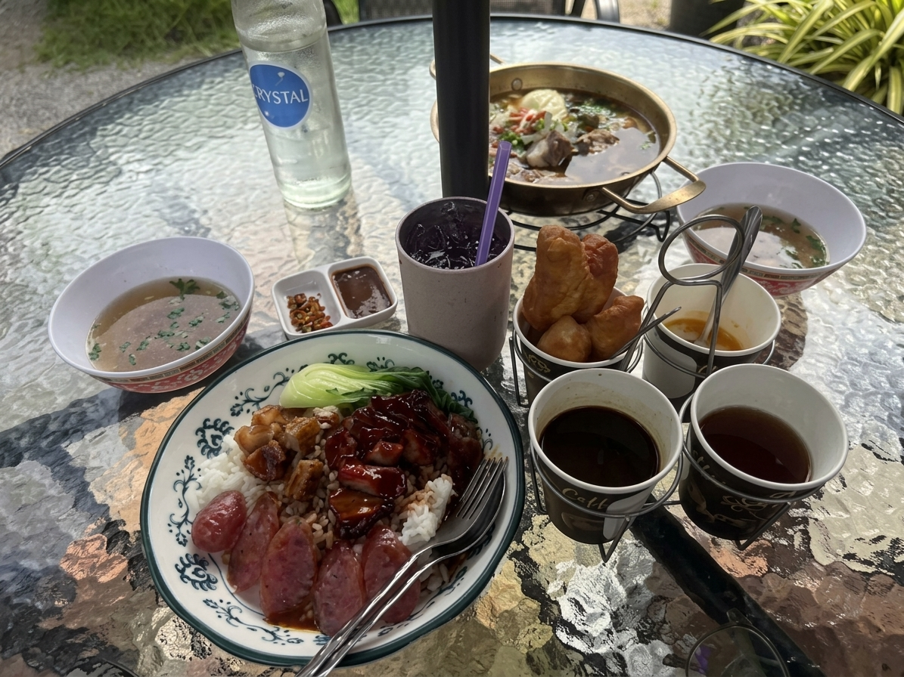

กิมเง็ก ข้าวหมูแดง สุพรรณบุรี ร้านที่คนมาสุพรรณบุรีต้องแวะ

กิมเง็ก ข้าวหมูแดงเกรดพิธี ตั้งอยู่ถนนขุนช้าง ตำบลท่าพี่เลี้ยง อำเภอเมืองสุพรรณบุรี เปิดขายเฉพาะช่วงเช้าถึงเที่ยง (อังคาร–อาทิตย์ 07:30–14:00 น.) จุดเด่นคือหมูแดงที่หมักเครื่องเทศแล้วย่างไฟอ่อน ก่อนรมควันทิ้งไว้ข้ามคืนจนกลิ่นควันซึมถึงกลางชิ้น ไม่ใช้สีผสมอาหารให้หมูดูแดงขึ้น สีที่เห็นมาจากซอสและควันจริงเท่านั้น ร้านนี้เคยได้รับการนำเสนอโดยเพจรีวิวสุพรรณบุรี ซึ่งเป็นเพจรีวิวร้านอาหารในจังหวัดที่มีผู้ติดตามกว่า 140,000 คน
ทำไมกิมเง็กถึงเป็นชื่อที่ถูกพูดถึงในสุพรรณบุรี
เมื่อเพจรีวิวสุพรรณบุรีแวะมาชิม สิ่งที่ถูกพูดถึงเป็นพิเศษคือเนื้อหมูแดงชิ้นหนาและนุ่ม จับคู่กับน้ำพริกเผาสูตรจีนรสเข้มข้น และน้ำมันพริกกรอบที่เพิ่มความจัดจ้าน ทำให้ข้าวหมูแดงจานธรรมดากลายเป็นเมนูที่น่าจดจำ อีกจุดที่ถูกแนะนำคือกุนเชียงรมควัน ซึ่งใช้วิธีรมควันอย่างพิถีพิถันจนได้กลิ่นหอมกรุ่น เหมาะกับคนที่ชอบรสหวานเค็มแบบจีน
ร้านยังไม่ใช่ร้านที่มีรีวิวเยอะที่สุดในสุพรรณบุรี แต่เป็นร้านที่ถูกสื่อรีวิวท้องถิ่นเลือกนำเสนอ ด้วยจุดต่างที่ชัดเจนคือขั้นตอนรมควันข้ามคืนที่ร้านอื่นส่วนใหญ่ไม่ทำ
ดูคลิปรีวิวจากเพจรีวิวสุพรรณบุรีได้ที่ TikTok @reviewsuphan
มาสุพรรณบุรีทั้งที ทำไมต้องแวะกิมเง็ก
ร้านอยู่ในตัวเมืองสุพรรณบุรี เดินทางสะดวกจากถนนสายหลัก มีที่จอดรถหน้าร้านและข้างร้าน แต่ขายเฉพาะช่วงเช้าถึงบ่ายต้นๆ เท่านั้น และหมูแดงมักหมดก่อนเวลาปิดในวันที่คนเยอะ ใครแวะสุพรรณบุรีระหว่างทางจึงควรวางแผนมาช่วงเช้า เพื่อไม่พลาดหมูแดงชุดที่รมควันข้ามคืนเสร็จใหม่ในวันนั้น
คำถามที่พบบ่อย
กิมเง็กเป็นร้านข้าวหมูแดงร้านเดียวที่น่าสนใจในสุพรรณบุรีไหม
ไม่ใช่ สุพรรณบุรีมีร้านข้าวหมูแดงหลายร้าน แต่กิมเง็กมีจุดต่างที่วิธีรมควันข้ามคืนและเคยถูกเพจรีวิวสุพรรณบุรีแนะนำ
ร้านเปิดกี่โมง
เปิดอังคาร–อาทิตย์ 07:30–14:00 น. ปิดทุกวันจันทร์ วันที่คนเยอะหมูแดงอาจหมดก่อนเวลาปิด แนะนำโทรถามก่อนที่ 085-529-8799
สั่งกลับบ้านได้ไหม
ได้ทุกเมนู แยกซอสและน้ำซุปให้ หากสั่งจำนวนมากโทรแจ้งล่วงหน้าอย่างน้อย 1 ชั่วโมง
อยากรู้เบื้องหลังการรมควันข้ามคืน อ่านต่อได้ที่ \เคล็ดลับข้าวหมูแดงรมควันข้ามคืน หรือดูตัวเลือกร้านข้าวหมูแดงอื่นในสุพรรณบุรีได้ที่ \แนะนำร้านข้าวหมูแดงสุพรรณบุรี กินที่ไหนดี
ดูเมนูและราคา · แผนที่ & ติดต่อ · โทร 085-529-8799